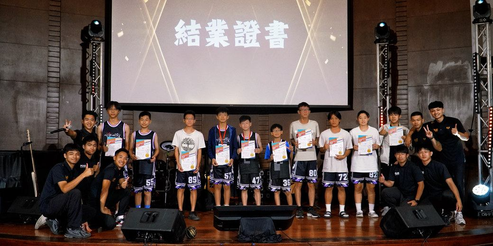

M+ 大雅教會THANKSGIVING · 2026
一封感恩的邀請
恩典，
仍在繼續。
把這一年看見的恩典，
與一路同行的你分享。
耶和華果然為我們行了大事，
我們就歡喜。詩篇 126:3
我們就歡喜。詩篇 126:3

親愛的弟兄姊妹、朋友們，平安！
2026 年，我們一同見證上帝帶領教會成長、生命更新，下一代被建造。每一次聚集、陪伴與禱告，都留下恩典的足跡。
近 60 人成人主日聚會
15 位一年門徒培育即將完成
2 位全職同工開始神學裝備
生命被陪伴，盼望在發芽。
夢想加油站課輔陪伴社區孩子，不老俱樂部關心長輩，青少年團契持續朝門徒建造邁進。熱火籃球營連結 22 間教會、約 100 位青少年，截至十一月已有 10 位年輕人受洗。


PRAY WITH US
邀請你，與我們同心守望。
- 生命與裝備為弟兄姊妹、門徒培育與同工的神學裝備代禱。
- 下一代與社區為課輔、長輩、青少年及籃球營後續關懷代禱。
- 事工需要為年底事工經費缺口代禱，求主供應，使福音與關懷持續發展。
讓愛延續，讓盼望發光。
每一份奉獻與守望，都成為教會持續牧養與陪伴的力量。歡迎與我們同行，也把這封信分享給願意關心與支持的朋友。
銀行匯款玉山銀行・大雅分行0358940009109
閱讀完整代禱信・奉獻回應 →匯款後請填寫奉獻回應，留下您自己匯款帳號的末五碼，方便財務核對。
2027，從 M+ 開始，
成為點亮世界的光。
感恩節快樂！
M+Church／M+大雅教會
主任牧師 吳俊璋 暨全體同工 敬上